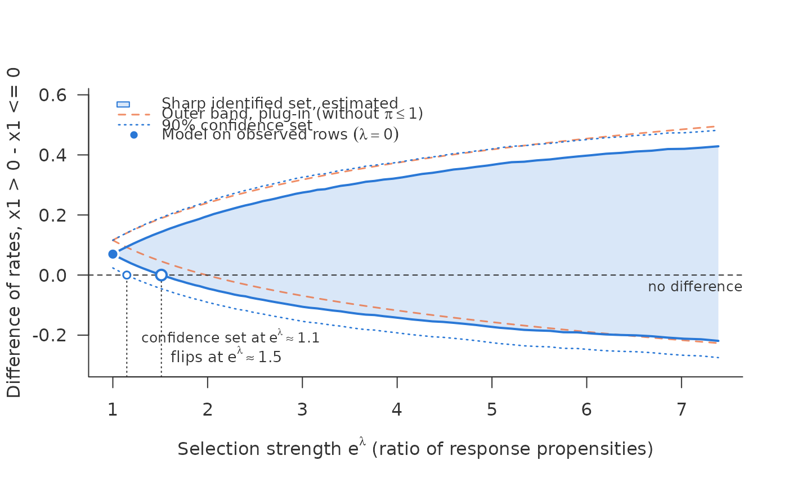

Debiased scan for the difference between two portfolios
Source:R/scan_contrast.R
sharp_scan_contrast.Rdsharp_scan_contrast() compares two disjoint portfolios chosen by
\(X\) – treatment arms of a trial, or two segments such as two regions –
under the same assumption as sharp_scan(): in every row the ratio of the
response propensities is at most \(e^\lambda\). It answers the question
a comparison is run for: up to which strength of selection does the
finding "A differs from B" survive?
Arguments
- eta_obs
Cross-fitted \(\hat\eta_{\mathrm{obs}}(x_i)\) for every row, in (0, 1).
- r
Cross-fitted \(\hat r(x_i)\) for every row, in (0, 1].
- response
Response indicator for every row, 0/1 or logical.
- outcome
Outcome, 0/1; ignored (and may be
NA) whereresponseis 0.- target_a, target_b
Logical vectors, one per row, selecting the two portfolios by \(X\). They must be disjoint and non-empty.
- lambda
Grid of \(\lambda\) values; must include 0.
- weights
Optional non-negative row weights, a function of \(X\).
- threshold
The difference at which the decision changes. Default 0.
- level
Confidence level. Default 0.9.
- trim
Rows with \(\hat r <\)
trimleave the target. Default 0. See the section on what is covered.- se_type
"max"(default),"conditional"or"empirical"; see the section on what is covered.- labels
Names of the two portfolios, for printing and plotting.
- among
"all"(default): each target is a whole segment, observed and unobserved rows alike."unobserved": only the unobserved rows of each segment, such as the rejected applications of two regions; see thesegmentargument ofsharp_scan_ci(). The targets stay disjoint, so the standard errors still add in squares.
Value
An object of class
c("sharp_scan_contrast", "sharp_scan_ci", "sharp_scan") whose
curve has the columns of sharp_scan_ci() for the difference
\(A - B\), with point the difference at \(\lambda = 0\) and flip
the flip points of the set, the outer band and the confidence set.
Details
Under that assumption each row may take its own extreme, so the two
portfolios may sit at opposite ends at once, and the sharp set for the
difference of rates \(A - B\) is
\([\mathrm{lower}_A - \mathrm{upper}_B,\ \mathrm{upper}_A - \mathrm{lower}_B]\).
Each endpoint is estimated by sharp_scan_ci(). Because the two targets
are disjoint, the influence functions of the two endpoints are non-zero on
different rows and have mean zero, so they are uncorrelated and the
standard error of the difference is the root of the sum of the squared
standard errors. Overlapping targets would need their covariance and are
not supported. By default each target is a whole segment of rows, observed
and unobserved alike; among = "unobserved" compares the rates of the
missing outcomes of the two segments instead, \(E(Y \mid R = 0)\) in
each, such as the default rates of the rejected applicants of each.
The flip points say from which \(\lambda\) on the set, and the confidence
set, reach threshold (by default 0: no difference). They are found by
linear interpolation on the lambda grid, so a fine grid gives a precise
flip.
Examples
d <- simulate_shadow(3000, tilt = -1, seed = 3)
f <- ~ x1 + x2 + z_shadow + z_policy + z_score
inp <- crossfit_inputs(d, "observed",
fit_eta = function(train, new) predict(glm(update(f, y ~ .), binomial, train),
new, type = "response"),
fit_r = function(train, new) predict(glm(update(f, observed ~ .), binomial, train),
new, type = "response"),
seed = 1)
k <- sharp_scan_contrast(inp$eta_obs, inp$r, d$observed, d$y,
target_a = d$x1 > 0, target_b = d$x1 <= 0,
labels = c("x1 > 0", "x1 <= 0"))
k
#> <sharp_scan_contrast> difference of rates x1 > 0 - x1 <= 0, debiased, with 90% confidence set
#> rows: 3000 x1 > 0: 1507 rows x1 <= 0: 1493 rows
#> r-hat < 0.01: 3 target rows, 0 observed rows; smallest r-hat observed 0.047
#> lambda = 0: 0.0697 [0.0237, 0.116]
#> lambda = 2 (propensity ratio 7.39): set [-0.219, 0.429], confidence set [-0.275, 0.482]
#> difference 0 reached by
#> estimated set: lambda = 0.413 (propensity ratio 1.51)
#> confidence set: lambda = 0.138 (propensity ratio 1.15)
#> outer band (plug-in): lambda = 0.687 (propensity ratio 1.99)
plot(k)
